Kristofer Schlachter
Projects:
Project 09 - Multi-Link Inverse Kinematics
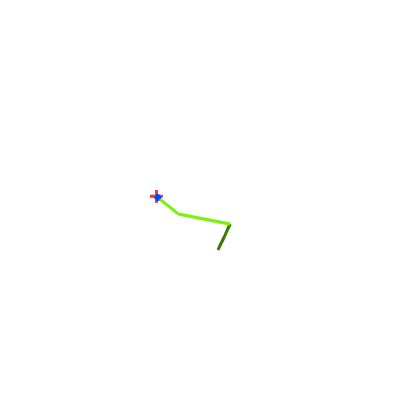
Project 08 - Skeletal Animation
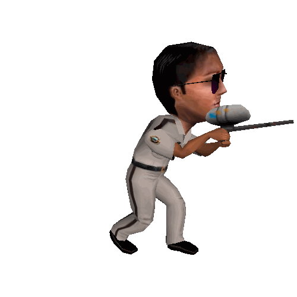
Project 07 - Parallax Mapping
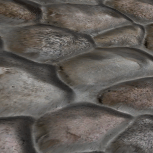
Project 07 - Normal Mapping
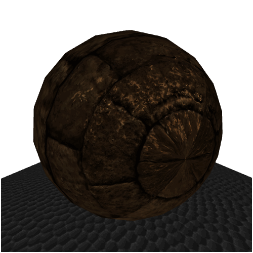
Project 06 - Mesh Generation
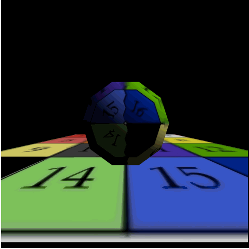
Project 05 - Javascript Matrices
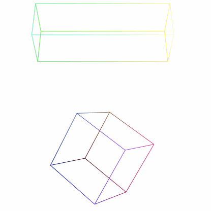
Project 04 - Sphere Tracing with distance fields

Project 04 - more sphere tracing with many cubes
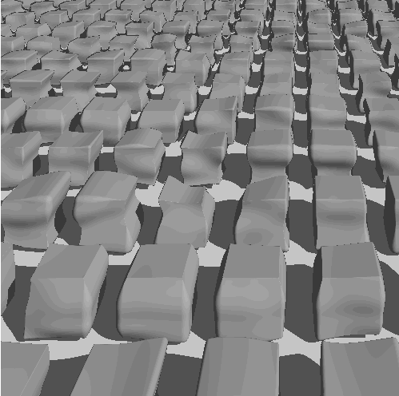
Project 03 - Ray Sphere with Reflection
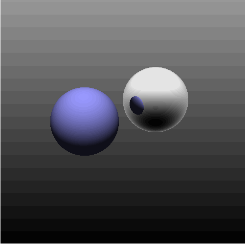
Project 03 - Ray Box + Ray Quadric
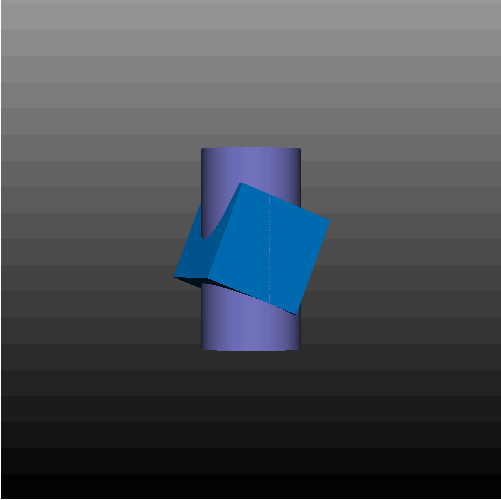
Project 02
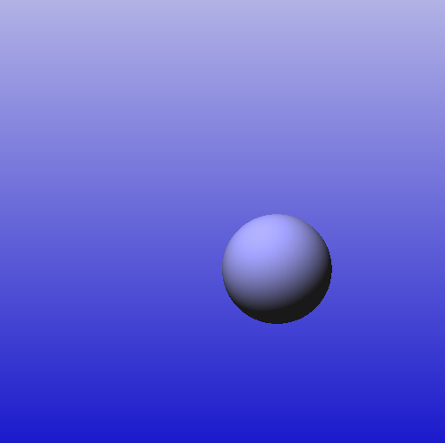
Project 01
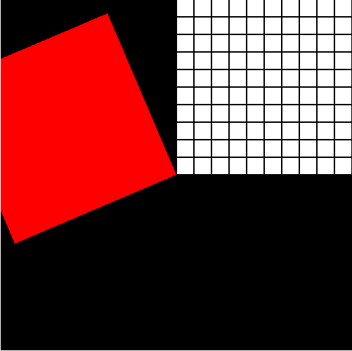